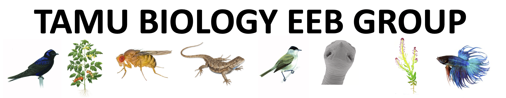

The EEB tea talks are informal chalk talk style meetings for EEB researchers in the biology department. We meet in BSBW 119 on select Fridays at 2:30. Projects discussed should be in the early stages where feedback from a diverse group would be helpful in charting a way forward. On weeks when there is no presentation we have tea, coffee, and conversation at the same time and location.